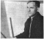
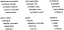

The Bauhaus Idea and Bauhaus Politics
|
Chapter 14. Hannes Meyer
Full text
Dessau, 31 March 1929
- 1 In Hesse, op. cit., p. 239.
Dear Mr Gropius,
As your former colleagues we greet you on the occasion of your honourary doctorate from the Technische Hochschule of Hanover. This appreciation of your pioneering work fills us with gladness and satisfaction, all the more so since we are aware of the tremendous odds you always had to fight against. The Bauhaus, as an institution dedicated to the development of both modern technical competence and the freedom of artistic imagination, owes its existence to you. Many years of your self-sacrificing labours are embodied in the school's spiritual and material foundations. In token of the memory of those rugged but beautiful years imbued by your personal contributions and the spirit of the collective, we have unanimously decided to elect you to the board of the Friends of the Bauhaus. We ask that you accept this membership as a sign of our affection.
In the name of the administration and Masters' Council [I] of the Dessau Bauhaus: Hannes Meyer, Wasslly Kandinsky, Paul Klee, Lyonel Feininger, Oskar Schlemmer, Josef Albers, Hinnerk Scheper, Joost Schmidt, Gunta Stölzl, Werner Feist, Fritz Heinze.1
1This letter might lead us to believe that the harmony was complete: the new leadership picked up where the old left off.
- 2 Whifford, op. cit., 1984; therefore In 1984 It was still being manufactured.
- 3 Hesse, op. cit., pp. 234-7.
2And this was, in part, true. Several firms showed interest in the Bauhaus lamps; the Berlin firm of Schwintzer und Gräff alone purchased rights to the mass production and sale of 53 different light fixture models. The firm of Rasch in Bramsche bei Osnabrück turned Bauhaus wallpapers into the school's most profitable and famous product, manufactured to this day.2 There was an abundance of orders for the advertising as well as for the printing workshops: the new Bauhaus-style typography was in demand for the packaging and advertisements of cigarettes, chocolates and shoes. Bauhaus textiles were acquired for the collections of the Grassi Museum in Leipzig, the Kunstgewerbe Museum in Chemnitz and the Lübeck Kunst-und Kulturgeschichte Museum. There was also increased interest in the non-commercial activities of the Bauhaus. Besides Kandinsky, Klee and Feininger, the younger Bauhaus painters Fritz Winter, Fritz Kuhr, Xanti Schawinsky and Lou Scheper also received invitations to prominent exhibitions. Oskar Schlemmer's stage workshop was invited for guest performances at, among others, the Dresden Staatsoper, the Berlin Volksbühne and the Breslau Stadttheater, and the Bauhaus band enjoyed great popularity.3
- 4 Magdalena Droste, 'Unterrichtsstruktur und Werkstattarbeit am Bauhaus unter Hannes Meyer'; in Hann (...)
- 5 Ibid.
- 6 Meyer. 'Bauhaus Dessau 1927-1930: Experiencias sobre la enseñanza politecnica'; in Edificación, no (...)
3Meyer restructured the Bauhaus. He expanded the Preliminary Course to include classes by Kandinsky, Klee and Schlemmer.4 As was also done at the Moscow VKhUTEMAS institute in 1926, Meyer amalgamated the wood and metal workshops, and, throwing in the mural workshop as well, named the new unit Ausbauwerkstatt. As its director he appointed Alfred Arndt, who was brought to the Bauhaus specifically for this purpose.5 In 1929 he invited Walter Peterhans to head the newly established photography department. He reintroduced physical education, this time devoid of Itten's ideology, also adding courses in sociology, mathematics, biology, city planning, political science, psychology and economics. The training strove for scientific precision in every respect; Walter Peterhans, for instance, 'for three years taught photographic optics and chemistry to future photo-reporters and advertising photographers'.6
- 7 Meyer, 'Mein Hinauswurf aus dem Bauhaus', open letter to Chief Mayor Hesse, Dessau: in Das Tagebuc (...)
4The student enrollment increased, so that entrance requirements had to be made more stringent to keep the student population within the necessary limits. The Bauhaus travelling exhibition went to Basel, Breslau, Dessau, Essen, Mannheim and Zürich, popularizing the school's ideas and products, and the annual revenues - which had been about 128,000 marks - nearly doubled.7
5These facts would suggest that the Bauhaus did, in fact, fulfil its promise: within its walls chemistry and creative theatre work, painting and sociology, city planning and photography could coexist. If these various disciplines were to fuse in the persons and works of individual students, it would mean that a generation of creative people would graduate from the Bauhaus far better trained, more multifaceted and richer in imagination than those graduating from any other institute of higher education. In addition, the school had begun to establish contacts with the world at large.
6In actuality, in spite of the facts indicating prosperity, the intellectual profile of the Bauhaus had diminished. It appears that the cause of this may be sought in Meyer's personality.
7For Gropius the separation or unification of art and technology remained an eternal problem and, what is more, a mystery. It is well documented that his slogan announcing their 'new unity' did not resolve the Issue for him. Even after specifying design as the chief function of the Bauhaus Gropius desisted from reducing the school to solely this dimension: he insisted on the occasional performance of music, and the continued presence of Klee, Kandinsky and Schlemmer. He had a multi-faceted concept of design itself: In planning an object or a building he considered the aesthetic qualities to be just as functional as technical aspects relating to utility. In Gropius's Bauhaus if an object failed to meet certain aesthetic standards it would not be considered usable. This was not spelled out in any programme; it was simply the case. Even though the painters were relegated to the background, their mere presence provided that opposite pole so essential for the tension needed for creative work.
- 8 Kállai, 'Zur Einführung', introduction to the catalogue of the Bauhaus travelling exhibition, 1929
- 9 Ibid.
8Meyer, on the other hand, refused to recognize problems. His way of thinking and approach as a designer was characterized by a fanatical reductivism. He was not the least bit concerned with art. Meyer considered art, and all those Intellectual and creative aspects that would have been the contribution of single, gifted individuals to the collective work, to be superfluous and even confusing. 'Art is merely order,' he would eventually declare, and it was precisely this reduction to a single dimension that brought about the changes at the Bauhaus. The objective of design now became equated with quantitative increment: providing millions with various objects. Its ideology became a feeling of social consciousness that would motivate further quantitative leaps in production leading to supplying the needs of millions. This also became a moral basis, making it seem natural, and consistent with its inner logic, that activities that produce nothing usable by the broad masses should be considered immoral and superfluous. Above all, the Isolation of painting within the Bauhaus expressed this scornful attitude. Perhaps Meyer simply did not dare to dismiss professors of the calibre of Klee or Kandinsky, but he emphatically isolated them, along with their work. Ernú' Kdllai wrote in 1929: 'The painting of the Bauhaus (Feininger, Kandinsky, Klee, Schlemmer) is totally separated from the school's practical shop work. It had been one of the boldest illusions of the Weimar period that these painters would take part in such shop activities - unless we consider their influence on the weaving workshop as evidence of participation. Even this influence ceased some time ago, so that in a creative sense the paintings of Feininger, Kandinsky, Klee and Schlemmer have not the slightest effect on other aspects of the Bauhaus today. Likewise, we cannot find the least contact between the works of the autonomous school of painting (Kandinsky and Klee's students) and the architecture and design of the Bauhaus workshops.'8 In several writings Kállai emphasized the absurdity of this situation; these warning signs, however, did not sway Meyer's position. 'But painting goes on at the Bauhaus in spite of the isolation. There is quite a large number of young painters at the Bauhaus, including some who are not enrolled in the painting department but are members of other workshops. We must take it as incontrovertible evidence of the need for the discharging and balancing of psychic tensions that painters persevere in their definitely unremunerative efforts, even in this hostile atmosphere. Painting is capable of tapping those deepest sources of humanity and revealing those emotive values that are indispensable precisely here, amid the rationalistic squeeze of the Bauhaus's architectural and goal-oriented discipline.'9
- 10 Meyer, 'Notizen für eine Biographie'. Meyer's bequest at the Deutsche Architekturmuseum; quoted In (...)
- 11 Ibid.
9Meyer was born in 1889 in Basel, and was raised in an orphanage after losing his father, also an architect, at the age of ten. In an atmosphere of cold terror, despair made him turn to studying, as he stated in an autobiographical sketch.10 Winfried Nerdinger aptly observes that planning living spaces for the warmth of the family environment or for the similar intimacy of a small community is a theme running throughout Meyer's architectural career. Appropriately enough, his final project was a children's home in Mümliswil, Switzerland.11 Meyer was always in search of community, a safe haven in the midst of the frailty of human relations. Perhaps he felt most secure in a community that was held together more by principles and solid rules than by the contingencies of unpredictable human emotions. Nerdinger's insight is reinforced by the fact that all his life Meyer was attracted to external regulations that held compulsive sway, and was inclined to place his faith in the implacability of dogmas rather than giving in to internal impulses and emotions. Perhaps this accounts for his preference of scientific methods; for him, objectivity and the elimination of contingencies depending on the personality meant a sense of security and peace.
- 12 Meyer, 'Curriculum Vitae 1927', see chapter 13, note 24.
10Meyer was attracted to architectural collectives and to left-wing, international architectural circles, such as the coterie of the periodical ABC in Switzerland. In 1923 he travelled to Scandinavia to study the cooperative movement, and in 1924 he spent six months in Belgium designing the Swiss pavilion at the international cooperative exhibition. He also organized and directed a small propaganda theatre, the Theater Co-op, where two life-sized marionettes and two actors communicated the advantages of the cooperative way of life. Meyer experimented with live propaganda as an exhibition genre in place of 'sterile exhibition stands'.12
- 13 See chapter 13. note 21.
- 14 Ibid., p. 29.
- 15 Ibid., p. 31.
11It would appear that Meyer consistently interpreted every architectural and social problem In terms of a denial of the individuum and an affirmation of the collective as the modem way of life. In the 1926 treatise, 'The New World',13 he celebrated the internationality of science, technology, sports and Esperanto, and the institutions of labour unions, cooperatives, corporations, cartels, trusts and the League of Nations, all of which demonstrate that 'the community rules over the Individual'.14 But Meyer went beyond this; he wrote: 'The novel is dead; we have no confidence in it or the time to read it. Painting and sculpture are dead as images of the real world; in the age of cinema and photography both are a sheer waste of energy … The creative opus as an "autonomous entity", as "l'art pour l'art" is dead: our communal conscience will not tolerate any individualistic disruption of order.'15
12Meyer's most Important commissions were all executed for the above organizations. Following the Co-op Pavilion he and his associate Hans Wittwer collaborated on designing the Constructivist building of the Petersschule In Basel; in the same year their entry in the competition for the League of Nations Palace in Geneva shared one of the first prizes. In 1929 Meyer's design was utilized when the residential school of ADGB, the German labour union organization, was built at Bemau, near Berlin.
- 16 'everything's so torpid here, we do not intend to die In Dessau,' he wrote to Willi Baumeisteron 2 (...)
- 17 Ibid.
- 18 Ibid.
- 19 Ibid. 'Again I am faced with the question: how much longer should I put up with these unbearable c (...)
- 20 Droste, op. cit., p. 134.
- 21 Meyer, Letter to J.J.P. Oud. Dessau. 22 July 1929; in Hannes Meyer-Architekt. Urbanist. Lehrer, op (...)
- 22 Sources quoted by Droste, op. cit., p. 138.
13Almost from the beginning Hannes Meyer felt himself In a constrained and awkward position at the Bauhaus. He considered Dessau boring and lifeless;16 he wrote: 'what I absolutely miss here is contact with the others.'17 He felt it most disturbing that 'Gropius totally isolates himself from me. We do not have the least understanding of each other. Too bad, but it cannot be changed.''18 Meyer, whose entire life had been an unending series of moves, again had to face the question of whether to move again.19 However, when Gropius's resignation suddenly opened up new possibilities for him, he accepted the appointment as director and went to work with renewed energy. He believed the majority of the masters to be on his side. 'I feel identified with the students and the majority of the masters, in forming a united front categorically opposed to the hitherto reigning fraudulent-commercial-theatrical Bauhaus image,'20 he wrote in a letter to Adolf Behne, without specifying those who agreed with him in such an evaluation of the school. He wrote to the ideologically related fellow architects Mart Stam and J.J.P. Oud, offering them positions at the Bauhaus. However, in his appeal to the latter, he already used language such as 'although I wish better opportunities for your talents and abilities than that available here in dessau [sic]'.21 In 1929 he also invited Willi Baumeister, Karel Teige and Piet Zwaart to teach at the Bauhaus.22
14Therefore it is not surprising that Meyer's programme, published under the title 'building' in the 1928/4 issue of the periodical bauhaus, in line with Meyer's conditioning, focuses on universal principles instead of defining concrete objectives for the Bauhaus.
15His philosophy is summed up by this programmatic statement, its militant sentences resembling Mayakovsky's energy in their abandonment of the simple declarative mode in favour of manifesto-like exclamations and questions, and preference for the imperative mood:
- 23 Meyer, 'Building'; In Wingler. op. cit., p. 153.
all these things are, therefore, not works of art.
all art is composition and, hence, is unsuited to achieve goals.
all life is function and is therefore unartistic.
the idea of a 'composition of a harbour' is hilarious!
but how is a town plan designed? or a plan of a dwelling? composition or function?
art or life?????
building is a biological process, building Is not an aesthetic process. In its design the new dwelling becomes not only a 'machine for living', but also a biological apparatus serving the needs of body and mind, the new age provides new building materials for the new way of building houses:
we organize these building materials into a constructive whole based on economic principles, thus the individual shape, the body of the structure, the colour of the material and the surface texture evolve by themselves and are determined by life, (snugness and prestige are not leitmotifs for dwelling construction.)...
architecture as 'an emotional act of the artist' has no justification ...
this functional, biological interpretation of architecture as giving shape to the functions of life logically leads to pure construction: this world of constructive forms knows no native country, it is the expression of an International attitude in architecture … pure construction is the basis and the characteristic of the new world of forms.
1. sex life
2. sleeping habits
3. Pets
4. Gardening
5. personal hygiene
6. weather protection
7. hygiene In the home
8. car maintenance
9. Cooking
10. Heating
11. Sunlight
12. Service
these are the only motives when building a house ...
the new house is a prefabricated building for site assembly; as such. It is an industrial product and the work of a variety of specialists: economists, statisticians, hygienists, climatologists, industrial engineers, standardization experts, heating engineers … and the architect? ... he was an artist and now becomes a specialist in organization! the new house is a social enterprise...
building is the deliberate organisation of the processes of life, building as technical process is therefore only one part of the whole process, the functional diagram and the economic programme are the determining principles of the building project.
building is no longer an individual task for the realization of architectural ambitions.
building is the communal effort of craftsmen and inventors, only he who, as a master in the working community of others, masters life itself ... is a master builder.
building then grows (rom an individual affair of individuals (promoted by unemployment and the housing shortage), into a collective affair of the whole nation.
building is nothing but organization:
social, technical, economical, psychological organization. (Emphasis added.)23
16This fanatical functionalism was merely one side of Hannes Meyer's ideological activities. He employed this same ideology based on a restricted vocabulary in his campaign against Gropius's activities as architect and director of the Bauhaus. In this passionate struggle that permeated his entire tenure as director his number one aide, at the outset, was the Hungarian art critic Ernó Kállai. After his appointment in 1928 Meyer invited Kállai to an editorial position on the periodical bauhaus. But documents indicate that Kállai's role was greater than that: he wrote the introduction to the catalogue of the Bauhaus travelling exhibition, and he made use of every possible forum to popularize the Bauhaus of Hannes Meyer.
- 24 Meyer. 'ADGB'; in Munka. 1928/1. Budapest. 1928.
- 25 Kállai, 'Stilus?' (Style?); in Munka, 1928/1, Budapest, 1928. pp. 4-5.
17Above all Meyer attacked Gropius's 'aestheticism'. In actuality he was attacking in his architectural oeuvre the quality that constituted Gropius's advantage over him, both as a human being and as Bauhaus director: complexity. Meyer demanded unconditional simplicity and linearity in both thought and architecture. Gropius's functionalism included both a fascination with the potentials of modernism, the delight in the luxurious elegance provided by new materials and the grand momentum of streamlined design. Meyer, obeying the basic principles of a disciplined functionalism to the letter, countered by somewhat dogmatically labelling this approach as 'formalism'. It was true that Gropius had a tendency to place the symbols of modernism above mere functional considerations, as may be seen in the glass wall of the main building of the Dessau Bauhaus. However, by doing so, he came closer to a fulfilment of the psychic needs associated with the building than did Meyer, whose scientific approach to psychological approximation led to such results as the rigidly immovable installation of furniture in parallel arrays (intended to arouse 'comradely feelings') in the dormitories of the ADGB school.24 Meyer, in his article, building, rattled off the staccato cadence of new materials and technologies, as if, by flaunting his widespread mastery of up-to-date information, he meant to surpass the professionalism of Gropius, who never worded statements with such scientific precision. At the same time, Meyer was taking aim at Gropius's ulterior motives and underlying attitudes, by trying to prove that the same forms which were, according to him, employed in an ethical manner only by the new architecture, were used by Gropius as meaningless, empty phrases. In an article Kdllai sent home to Lajos Kassák, he wrote: 'Current opinion has it that what with the horizontal-vertical arrangements of straight lines, cubes, windowed corners and flat roofs, we have triumphed over everything else. With these, modernism has been rendered its due, and everything else may remain as before, and the world can go on as if nothing had happened.'25 Kállai shared Meyer's view, according to which Gropius was a false prophet who turned the holiest of causes - progressive, socially committed, industrially based architecture - into a superficial modernist joke, and was therefore the most dangerous enemy of the architecture that was truly in the service of society, for he had deceitfully co-opted its honourable vocabulary and means of expression.
18Kállai wrote:
- 26 Kállai, 'Bauhauspedagógia, Bauhausépítészet' (Bauhaus pedagogy, Bauhaus architecture); in Tér és F (...)
Gropius's fanatical intellectualism has divested the architectural concept of every humanistic factor. Therefore he considered the design studio more as a technical training ground than as an educational cooperative. Gropius builds in the economic and technological spirit typical of industrialism, and even the luxurious aesthetic fads that here and there press into the foreground of some of his projects play games with Industrial materials and structures. In Gropius's industrial conception of architecture the idea of the house as a mass-produced item becomes a purely mathematical factor, and In spite of all of its aesthetic concomitants it retains the character of an, albeit stylish and witty, but nonetheless cold and harsh, calculation ... The principles of large-scale production reign supreme, and these principles, wrapped in all the rational and technological armour of up-to-date social hygiene and comfort, ultimately still lead to one thing: the warehousing of the homeless or slum-confined masses in a relatively cheap, speedy and summary manner.26
19Kállai, who saw eye to eye with Meyer, was obviously making awkward efforts to sever Gropius, as architect and socially responsible creator, from the platform of architectural theory and practice he shared with Meyer. As opposed to Gropius's 'fanatical intellectualism', Kallai posits Meyer's superior attention to psychological and biological factors, even though he cannot point out how these theories are carried out in actual practice - what, if any, are these superior values in the buildings themselves. He writes:
- 27 Ibid.
We have not fulfilled the requirements of modern engineering ingenuity by merely mass-producing our houses. The simplest industrial machine is capable of creating inferior products. The issue is what and how much we demand of the machine-made product regarding function. But the majority of architects demanding the rationalization of construction reduce this programme into an overly simplified and narrow formula, insofar as they fail to consider the organic arrangement along geographic and social criteria, the material and objective potentials of the natural environment and the notion of settlements unified by more intimate and human relationships.27
20Kallai and Meyer, even by mustering all their arsenal, could not come up with anything more substantial than sheer demagoguery against Gropius - or more precisely, the phantom of Gropius. Empty words, to emphasize that not Gropius, but Meyer was the sole true representative of modern architecture in the collective spirit.
- 28 Ibid.
Not only with respect to the Bauhaus, but regarding all of modem architecture, Hannes Meyer deems it necessary to state that this architecture is threatened by the dangers of formalism ... Hannes Meyer belongs to that hitherto small group of modem architects who consider industrial rationalism and technological constructivism as mere subservient means to an incomparably higher idea, that of a socio-psychologically oriented organization … Gropius is an architect whose primary calling is the design of industrial, technological and administrative objectives, while Hannes Meyer's entire mentality as an architect is rooted in the notion of the social collective and the harmonious self-government of a cooperative lifestyle. As opposed to the intellectually and aesthetically Constructivist aims of his predecessor, Hannes Meyer's architectural perspectives are more general, more profound. They are the architectonic applications of an entire woridview incorporating cultural politics and a philosophy of life.28
- 29 Kállai, 'Korrektúrátl', op. cit.
- 30 'Unter dem Wort Konstruktivismus marschieren die Anarchisten, die ganze Spekulation... Solange das (...)
- 31 Cf. Kállai. 'Stilus?', op. cit.; also cf. Kállai, 'Zehn Jahre Bauhaus'; in Die Weltbühne. 1930/4. (...)
21All along, among the various left-wing art movements Ideological debates had raged about defining 'true' Constructivism, 'true' functionalism or 'true' social commitment. As early as 1923 Kallai directed a polemical essay at De Stijl, labelling its activities as exclusive Constructivism, and by doing so, he judged De Stijl to be separate from the main international thrust of the movement29 El Lissitzky also made Ironic references to Constructivism as a fashion phenomenon.30 A most significant element of these debates was the desire to create a grand new international style while at the same time style itself was denounced as a historically invalid category. Naturally a style was demanded, since they endeavoured to create the emblematic forms valid for the new age, but the word style itself was for them associated with a historical era that they strove to dismiss. In the early, passionate days the members of the Bauhaus grouped together precisely for the creation of this grand new style, but by the end of the 1920s they came to reject the very notion of a 'Bauhaus style' in exasperation.31 The left-wing artists wanted to create a valid and lasting art while paradoxically wanting to bring about the end of art itself, in the forms in which it had existed till then.
22Kallai, in a temporary fit of historical short-sightedness, relived the Constructivist visions of the early 1920s, and chose to believe Hannes Meyer's claim that there was still actual life in the idea of a socialist-communist egalitarian society.
23There is an unavoidable irony in the situation. After Gropius, the scion of an upper middle-class family with deep roots in German intellectual and architectural tradition, and with personal contacts extending all over Europe, in spite of all of his sophisticated attempts, had failed to have the Bauhaus accepted at Weimar and Dessau, a Swiss architect and a Hungarian art critic managed to muster the courage and faith to promote the despised and alien teachings of international Constructivism and Marxism in a Germany on the eve of Hitler's accession. In addition, in a Dessau already permeated by the political right, voicing such views endangered the Bauhaus's survival.
- 32 Kállai, 'Ideológiák alkonya' (Twilight of Ideologies); in 365, Budapest, April 1925. pp. 19-20.
- 33 Kassák. 'A reklám' (Advertising); In Tiszfaság könyve (The Book of Purity), Budapest, 1926, pp. 82 (...)
- 34 Kállai. 'ein beliebter Vorwurf gegen das bauhaus'; in bauhaus. 1928/4, p. 15.
24Of all people, Kallai should have known best that the faith and ideology of Constructivism could not be revived. The arrival of the 'twilight of ideologies' set in motion a process that resulted in the absorption of the Constructivist formal vocabulary into the public domain of everyday material culture.32 Such an integration was promoted by the artists themselves: the abstract geometrical motifs and the new typography, as emblems of a progressive faith forced to go underground, now circulated as a new, ritualistic but marketed ornamentation in everyday use. It was advertising especially that offered plentiful opportunities for recharging the depleted Constructivist formal vocabulary with a new actuality. 'The advertising prospectus of a department store, with its well designed typography, its clear, easily legible lettering and the light/dark spatial differentiations of the paper's surface offers a calm and simple object that inspires more trust and confidence than any individualistic, artsy endeavour,' wrote Lajos Kassák, a witness and participant of this process of integration, in 1926.33 'The advertisement is applied art, the advertising artist is a social creator,' he added. Meanwhile the former Constructivist artists advertised, employing a Constructivist formal language, the rubber tyres, shoe soles and candies of manufacturers whose consumer world was the original target of Constructivism. And they were doing this, as witnessed by Kassak's words (which would have been endorsed by Hannes Meyer), in the belief that as innovative social creators they had transcended the bourgeois, historically superannuated dimensions of individualism. The Bauhaus attempted, unsuccessfully, to resist this state of affairs; as Kállai wrote in the periodical bauhaus: 'but neither can our ultimate aim be the obedient service of industrial enterprise'.34 However, when Hannes Meyer summed up his achievements at the Bauhaus, he still mentioned the increase in industrial orders as his greatest triumph.
25The crowning piece of Meyer's ideological work is his free-form poem written in 1929, 'bauhaus and society', in which he expressed a new Bauhaus manifesto. Paradoxically, in spite of Meyer's anti-capitalist beliefs, his denial and rejection of German society, this new programme defines the meaning and ultimate aim of the Bauhaus's existence as eventual integration into society:
the dessau bauhaus is not an artistic
but a true social phenomenon.
our work is the creation of form,
therefore society determines it.
our worksphere is ordained by society.
does not our german society today demand
a thousand schools, parks, buildings for the people?
a hundred thousand apartments for the people?
a million pieces of furniture for the people?
(what use are the experts twittering about
the cubistic cubes of bauhaus objectivity?)
and so we consider as a given
our society's
structure and needs,
we demand
the greatest attention to the people's life
the greatest insight into the people's soul
the greatest familiarity with the people's community.
as designers
we are the servants of this community:
whatever we do serves the people.
all of life is a striving after harmony,
it is called growth,
the striving for harmonious consumption of
oxygen + carbon + sugar + starch + protein,
it is called work,
our striving for a harmonious form of life,
we are not after
bauhaus style or bauhaus fashion.
nor after fashionably flat ornamentation
nor horizontal-vertical neo-plasticity.
we are not after
geometric or stereometric representation
that is counter to life and function.
we are not in timbuctoo:
our design is not dictated by
rhythm or hierarchy.
we despise all forms
that prostitute themselves into formalism.
thus the aim of all bauhaus work
is the unification of all life-giving forces
for the harmonious shaping of our society.
we bauhaus people are researchers:
we are searching for the harmonious opus,
the result of conscious organisation
of spiritual and psychic powers
…
thus our work
points towards the collective
and demonstrates the worldview
of the broad masses of people.
art?
all art is order.
…art is no cosmetic device
art is not effect-mongering
art is merely order.
…
art has always been merely order,
today all we can expect from art
is knowledge of a new objective order
valid for all,
the manifesto and means of a collective society.
thus the study of art
will aim at the system of law and order
and be indispensable for all designers.
thus art
will not be a profession,
but the vocation of creating order.
thus bauhaus art
will be the experimental means of objective order,
26It is difficult to resist the temptation to compare this last manifesto of the Bauhaus with the first one. This is not only because of the identical phrasings, such as 'art as a profession', which is discarded by Gropius only in the democratic practice of crafts, since 'by the grace of heaven' anyone may become an artist, whereas Hannes Meyer rejects the notion because in his visionary world there will no longer be any art (only order) to be taken up professionally. It is also worthwhile to compare the atmosphere and the overtone of these manifestos.
- 36 Droste, op. cit., p. 135.
27Gropius calls for a single great effort, a heroic, symbolic gesture elevating the undertaker as a participant in a project that would 'rise towaras heaven like the crystal symbol of a new faith'. In contrast, Meyer's call summons to a task more suitable for ants than for heroes; the diligent manufacture of a million pieces of furniture and a hundred thousand apartments for the people. For the accomplishment of this task, he prescribes the harmonious consumption of 'oxygen + carbon + sugar + starch + protein'. As if he was an avatar of political correctness, Meyer opened the doors of the Bauhaus for students without talent: 'The Bauhaus . . . does not Intend to be an arbiter of talent ... but aims to absorb the greatest possible number of young people to enable them to find their proper place in society.'36
28The first manifesto is one loud shout: Look towards the future! 'Let us desire, conceive, and create!' Whereas Meyer's manifesto aimlessly shuffles in the present, rattling off in a monotone all those duties that fall as the Bauhaus members' lot; they are here, after all, to perform a service, their tasks are 'ordained by society'. The upper dimension of Gropius's horizon is unlimited; Meyer on the other hand declares that 'we are not in timbuctoo'. Naturally we are dealing here not only with the personal differences between Gropius and Meyer. Rather, it is a matter of observing the landing place of the thought-rocket launched by Gropius in 1919, at a time of upwardly mobile ideas. It would appear that Meyer's drama consisted of his misreading of the historical moment: in art, considering as a triumph the downgrading/absorption/fashion of Constructlvist forms. As for politics, he interpreted the intermezzo of vigorous polarization, the euphoria of the extreme left in its reaction to the advances of the extreme right, as an actual historical opportunity. The issue is not which man was ultimately justified by history - for it was neither - but the fact that Gropius's manifesto is historically plausible, for it was adequate to the given historical moment, whereas Meyer's manifesto lacks credibility, for at the place and time of its publication it was invalid as a programme. The call for a collective society, the militant emphasis on the values of the political left that was already nearly outlawed within a venomously hostile right-wing milieu is a sign of an incorrigible lack of historical sense. Such a pointed stand in a politically polarized situation could pass for political heroism, but was not a viable programme for a director responsible for the school's survival. Meyer had no comprehension of the complex strategies Gropius had evolved to keep the Bauhaus afloat, nor did he seem to be willing to master his predecessor's forte, the art of navigating hostile waters.
29Against this harsh evaluation it could be argued that, because of the polarization of political forces, diplomacy's sphere of action was greatly diminished. It could even be said that there is a limit to compromise, and that in a sharply right-wing environment survival at the cost of accepting certain political dictates is no longer a desideratum. However, Meyer was responsible for keeping alive an innovative, apolitical ideal, as well as maintaining the educational and work opportunities of the students. Therefore he could, by rights, be expected to soft-pedal the conflicts and insist on a Gropius-like apoliticality, instead of, on the contrary, provoking the wrath of political powers. And Mies van der Rohe's Bauhaus proves that there was still time.
30At the Bauhaus a mimeographed monthly made its appearance, entitled Bauhaus - the Organ of Communist Students at the Bauhaus and featuring militant articles sharply opposing the right wing and the fascists. These populist-Marxist pamphlets took a courageous stand, but their appearance within the walls of the Bauhaus was a suicidal gesture. A minimal amount of sober reflection should have made anyone realize that in a town dominated by the Junkers airplane factory such a political mode would not be tolerated. It was not possible to take seriously both this militant leftism and the practical, apolitical aspect of Meyer's programme outlining design work aimed at fulfilling society's needs. The programme calling for 'a thousand schools', 'a hundred thousand apartments' and 'a million pieces of furniture' for the people already sounded perilously close to the radical lower middle-class ideology of the Nazis, whose every word began with Volks-. Meyer should have realized the importance Gropius placed on avoiding politics, on neutral design work, and the significance of this neutrality in maintaining the Bauhaus as a high-level, intellectually independent workshop whose autonomy could not be legally infringed.
- 37 Hesse, op. cit., p. 242.
- 38 'Kandinsky was clearly implicated in a plot to have Meyer removed: It was his close friend, the ar (...)
- 39 Hesse, op. cit., p. 243.
- 40 Ibid.
- 41 Ibid.
- 42 Ibid.
31Thus Meyer's activities necessarily hastened his fall. In May 1929 Chief Mayor Hesse was still able to muster the slight majority of votes needed to extend the contracts of the Bauhaus professors until 1935. But Hesse himself was astonished by the large number of votes for the right: 'Even my municipal building councillor!' as he remarked later.37 Soon, however, he had a visit from Dr Ludwig Grote, state supervisor of monuments and close friend of Kandinsky,38 to report that serious political problems beset the Bauhaus: there was communist agitation going on among the students. The Bauhaus faculty was extremely concerned about this, and their anxiety was aggravated by the fact that Hannes Meyer, ignoring the school's apolitical tradition, did nothing to prohibit intramural political activity. Hesse wrote in his memoirs: 'Personally I never doubted Meyer's loyalty; in the course of our numerous conversations my Impression was that he was politically neutral. I recalled that once he asked me if communists were allowed to study at the Bauhaus, and I replied that we were not in the habit of examining the students' political attitudes. I added that naturally they could not engage in politics within the school's walls. This question made me somewhat uneasy, but I dispelled my doubts by recalling that Meyer was Swiss, and therefore rather unfamiliar with the German political situation.'39 Dr Grote, however, did not share this view, and therefore Hesse asked Meyer to see him, whereupon the latter admitted that there was left-wing political activity at the Bauhaus. He stated that he was aware of the dangers this posed, and would do everything in his power to eliminate these tendencies. Hesse writes: 'We agreed that he would emphatically remind the students that there was no room for politics within the school. Since Meyer still had my confidence I did not think it strange that he asked me to put this in writing, as it would be more effective that way.'40 Soon Hesse received word that instead of improving, the situation at the Bauhaus was worse, and Hannes Meyer was making no efforts to curb the communist students. 'Dr Grote told me that Kandinsky assured him the Bauhaus masters were looking on in helpless despair at these developments which further aggravated the already impaired student-faculty relations, endangering the effectiveness of instruction.'41 Hesse, who had received similar news from other sources as well, chose the course of speedy action: one afternoon he and Dr Grote paid an unannounced visit at Meyer's office. 'Dr Grote, having had enough of aimless verbiage, interrupted Meyer, addressing him with an emotional voice: "Hannes Meyer, I believe you have misled us." Hannes Meyer immediately understood what the charge was about, and, putting aside the caution that characterized all of our earlier conversations, replied Instantly: "But Dr Grote, you know perfectly well that I am a theoretical Marxist.'42
- 43 Ibid.
- 44 'Kopf oder Adler? zum fall bauhaus'; in Berliner Tageblatt, no. 17,10 January 1931.
The article was (...) - 45 Meyer, 'Mein Hinauswurf', op. cit., pp. 70 and 72.
- 46 Ibid., p. 73.
32It was obvious that Meyer could no longer remain at the Bauhaus. As Hesse puts it: 'The parties supporting the Bauhaus would not have voted a single pfennig for a communist-led school.'43 Meyer felt that he had been treacherously stabbed in the back. According to his article 'My Expulsion from the Bauhaus' he did not in the least anticipate that his Marxist views would make it impossible for him to stay on at the Bauhaus. The question still remains: why, then, did he hide these views? The injured tone of his letter to Hesse betrays a naivety (or pseudo-naivety) as he lists his merits in making the Bauhaus so successful. He in fact took more than his share of the credit, at the expense of the Gropius-directed Bauhaus; and these claims were later answered, possibly by Gropius himself.44 It is evidence of Meyer's peculiar style of argumentation that he claims credit for using the improved financial situation of the Bauhaus to enable 'proletarians to attend the Bauhaus', for 'after all the time had come for the Bauhaus to be proletarianized'.45 At the end of his letter, he complains to Hesse: 'Down with Marxismt And for this purpose who should you have chosen but Mies van der Rohe, who designed the memorial for Karl Liebknecht and Red Rosie [sic]I'46 This last emotional outburst reveals how poorly Meyer understood the German political picture. He was unaware that Mies van der Rohe could afford to design the Liebknecht-Luxemburg memorial, just as Gropius had got away with his Märzgefallene memorial in Weimar, for his social and professional rank and qualifications were decided by other criteria.
- 47 Die Rote Fahne, 30 September 1928; quoted by Gillian Naylor, The Bauhaus Reassessed, The Herbert P (...)
33It was precisely the communist newspaper. Die Rote Fahne, that protested against the appointment of Mies van der Rohe, stressing that in spite of the memorial, Mies was no Marxist, but a reactionary.47 In short, one had to think in terms of far more complex relations, reaching into both the present and the past, than Meyer did, as witnessed by his writings.
- 48 The catalogue of the 1989 Bauhaus Archiv and Deutsche Architekturmuseum exhibition was followed by (...)
- 49 Ulm, op. cit., p. 67.
- 50 Ibid., p. 69.
34The recent literature on Meyer has attempted to re-evaluate the events to yield a more nuanced image of the man.48 Gropius himself, repeatedly provoked by Meyer's comments about him both during and after Meyer's tenure as director, personally considered him a definite disappointment, although he would always add that there was nothing exceptionable about his work as an architect. In 1964 Tomas Maldonado and Gropius engaged in a debate about Meyer's evaluation. According to Maldonado, at the end of the 1920s it was impossible to consider the social aspects of art without a concrete political commitment, and a politically neutral position, as Mies van der Rohe's tenure demonstrated, was only possible at the cost of abandoning the Bauhaus's progressive tenets. Maldonado credits Meyer with refusing to choose this route, for 'subsequently it was shown how narrow the path was amid the political and ideological pressures ruling Germany in those days.'49 As opposed to this view, Gropius voiced his belief that party politics were a private affair that need not be involved in the social aspects of creative work, especially in the Germany of the late 1920s.50 Maldonado asked Gropius if it was true that originally he had had a high opinion of Meyer, then came to view him more critically, yet still recommended him as his successor, only later changing his opinion radically. Gropius replied that he had acted in perfectly good faith, for whenever they talked about keeping the Bauhaus free of politics Meyer was as ardently for this as himself.
- 51 Ibid., p. 70.
After his appointment, he dropped his mask. His political materialist views, which he had kept hidden from us, undermined the Bauhaus idea, set the institute on a course between Scylla and Charybdls, and ended by ruining himself. I don't in the least agree with your view that he could not have done otherwise given the circumstances. Not at all!... Meyer imperilled the Bauhaus not so much because of his political idealism but as a result of a lack of political instinct, making him incapable of the balancing act between practical work and political theory ... His strategy and tactics were too pedestrian: he was essentially a radicalized petty bourgeois. The culmination of his philosophy was the observation that 'life equals oxygen plus sugar plus starch plus protein', to which Mies promply replied: if you try to mix them together, you'll get something that stinks.51
- 52 He quotes Meyer's letter to Karel Teige, written in August 1930, In which Meyer, exercising self-c (...)
- 53 Philip Tolziner, 'Mit Hannes Meyer am Bauhaus und in der Sowjetunion'; in Hannes Meyer -Architekt, (...)
- 54 Droste, op. cit., p. 141. Although, as indicated above, he repeatedly used the term 'proletarian' (...)
- 55 Ibid.
- 56 Meyer, 'Mein Hinauswurf', op. cit.
- 57 Margret Mengel's letter to Lotte Beese. Dessau, 31 July 1930; Getty Archive, The Getty Center for (...)
35One of the nagging questions concerning Hannes Meyer remains to this day: did he consciously mislead Gropius? According to Nerdinger, Meyer became an actual Marxist, and eventually a Stalinist, only after his Bauhaus years.52 On the other hand Philip Tolziner's memoir mentions that, although guest lecturers at the institute were always announced in the periodical bauhaus. this was not done for the visit of Professor Ludwig from Moscow, whose talk was not given at the school auditorium but in Meyer's private apartment, suggesting a certain amount of political conspiracy.53 Magdalena Droste correctly points out that even though Meyer espoused Marxism, he did not use the Marxist terminology of his day: he spoke of the people instead of the proletariat, and made no mention of class or the bourgeoisie.54 At the same time he tolerated, in a supportive way, the communist organization within the Bauhaus, even though this was unquestionably party-politics: the number of students in this communist cell rose from 7 in 1927 to 36 in 1930.55 Still, Meyer's leftism smacked of a defiant naivety: it seems as if this gradual slide towards the left had been his response to the resistance he had to face within the Bauhaus on the part of Kandinsky and the artists, as well as to the local and nationwide shift to the right. His open letter to Mayor Hesse hints at the dual nature of the pressures on him, even though he does not mention the Bauhaus artists: 'you and I both worried about the ominous politicization of the Bauhaus. But while to you it seemed the danger originated at the Bauhaus, I perceived the threat as coming from the outside.'56 Meyer's naivety is also indicated in a letter written by Margret Mengel about Meyer's dismissal, to her friend, Meyer's companion Lotte Beese, who was working in Prague at the time: 'they accuse him of engaging in party politics, communist of course; they bring up his marxist education, his stand vis-à-vis art, that is, his intention to rid the bauhaus of art, as a final argument, they brought up his financial contribution to the children of the striking miners of mansfeld, the communist students circulated a subscription list, whereupon hannes generously signed up his contribution, as he saw fit it all seems like such an absurdity.'57
- 58 Nerdinger, op. cit., p. 25.
- 59 Meyer, 'Flucht ins Leben', in DZZ (Deutsche Zentral Zeitung), Moscow, 15 January 1935; excerpts in (...)
36Many people conclude that Meyer was definitely a communist from the fact that after his dismissal from the Bauhaus he went, with a group of his students, to work in the Soviet Union. But it seems that Meyer's inclinations, together with all that happened to him, gradually led to his 'escaping forward' (as Nerdinger puts it),58 or, in his own words: to choose the path of 'escaping into life'.59 Meyer did not end up in Moscow as a result of any clandestine communist contacts. In August 1930 he wrote to Lissitzky:
- 60 Meyer, Letter to El Lissitzky. 23 August 1930; quoted by Winkler, op. cit., p. 131.
I am already at work on my future: I have visited the russian trade delegation and the embassy, where they showed great sympathy for my situation, in both places they thought i should travel to moscow In September to prepare the ground there for both myself and the bauhaus collective through negotiating contracts... i was never as certain as i am right now that at the present time we have nothing to accomplish in western europe. the paths of intellectuals diverge; even paul klee says that he thinks his road leads "to the west" and mine "to the east" ... i cannot tell you how happy i am to emerge so blamelessly from my ambiguous dessau position.60
- 61 Winkler, op. cit., p. 131.
- 62 Ibid.
- 63 Ibid., p. 132.
- 64 Tolziner, op. cit., p. 249.
37In the autumn of 1930 Meyer travelled to Moscow, accompanied by Béla Scheffler, a Hungarian who knew Russian, and on 22 October he was already giving a lecture about the reactionary developments at German universities to an audience of 800 at the Hall of Unions.61 Meyer received an appointment at the State Architectural University (VASI), where on 3 November he lectured to an audience of 500 university students and faculty about the work of the Bauhaus. At this university he organized an exhibition he called 'The Dismantled Bauhaus'.62 At the outset Meyer was perfectly satisfied; 'i don't understand why i haven't been living here since 1917', he wrote for the 8as/er Vorwärts at the end of November.63 By this time Meyer found himself at GLAVPROMKADR, the centre of technical-industrial planning, making his students' travel possible. This was no simple matter; in addition to Meyer's outstanding work, the well-known journalist, Mikhail Kozlov, also offered significant help.64 By February 1931 seven former Bauhaus members (Bela Scheffler, Anton Urban, Rene Mensch, Klaus Meumann, Konrad Puschel, Philip Tolziner and Tibor Weiner) had joined Meyer in Moscow, calling themselves the Red Bauhaus Brigade, or Red Front for short. Around this time the Soviet Union welcomed highly trained foreign technical experts; the Bauhaus Brigade was employed by GIPROVTUS (State Institute for Planning Technical Universities).
- 65 Ibid., p. 253.
- 66 A. Mordvinov, 'Bauhaus k vystavke v Moskve' (The Bauhaus to the Moscow Exhibition); in Sovetskaya (...)
- 67 Ibid.
38In the summer of 1931 Meyer organized an exhibition consisting of about 140 drawings, graphics, photos, and about 40 original objects (chiefly textile pattern samples) at the Moscow gallery of the Federal Institute of Cultural Relations (VOKS). In September of the same year the exhibition travelled to Kharkov In the Ukraine. The title of the exhibition was 'Bauhaus Dessau - Hannes Meyer's Directorship (1928-1930)' and it was received with reservations both by the viewing public and the qualified expert/official sector. The former objected because they did not receive the images of the Bauhaus they had expected;65 the latter because they read the struggles of the Bauhaus as further evidence that 'within the framework of bourgeois art' it was impossible to break out of capitalist domination.66 'Walter Gropius's school aestheticizes technology, Hannes Meyer's discovers technology and turns against all aestheticization,' wrote Mordvinov, whose critique of Meyer was the same as the latter's regarding Gropius: 'Hannes Meyer's school lacks social-ideological relevance ... his methods are mechanical.'67
39Meyer spent six years in the Soviet Union. In Moscow he received such highly significant assignments as the city-planning project for metropolitan Moscow; he was also commissioned for the city planning of the Jewish Autonomous region of Birobidzhan by the banks of the Amur. Along with so many other projects of this era, Meyer's designs remained on paper. In 1936 he returned to Switzerland, travelled to Mexico from there and, having returned home again, died in 1954.
- 68 Fritz Hesse's letter to the Court of Arbitration, 19 August 1930; quoted by Droste, op. cit., p. 1 (...)
- 69 Ibid.
- 70 Droste quotes a telegram from the Kandinsky Bequest at the Centre Georges Pompidou, Paris: 'After (...)
40In conclusion it is necessary to risk an interpretation of the Bauhaus's fatal changes of leadership that may seem unusual. As we have seen, Gropius's departure had been hastened by the artists who, besides not being very enthusiastic about design, did not share Gropius's commitment. These artists had increasingly made it clear that the collective, that is the Bauhaus as a collective cause, was far from being important enough for them to relegate their own creative work even temporarily into the background. Gropius's disappointment on recognizing this may have been the chief subjective cause of his departure. We must note that Kandinsky and the Bauhaus artists played a significant role in Meyer's ouster, and not only because, as we have seen, it was Kandinsky who called Dr Ludwig Grote's attention to the situation at the Bauhaus. Hesse himself offers a more nuanced picture of this in a letter: 'There was a crisis of confidence at the Bauhaus between the director and the masters involved, giving rise to concern that the latter would not return to their positions at the end of the summer vacation if Meyer remained the director. Therefore the magistracy had to consider the possibility of losing some of the most valued members of the Masters' Council if the present director was retained.'68 Magdalena Droste also believes that 'Meyer's opposition within the Bauhaus, led by Kandinsky and Albers, played a significant role in his dismissal.'69 It is not certain, however, that they were dismayed only by Meyer's impending structural reforms or the possible curtailing of their spheres of activity - after all, they never wanted a greater role in communal affairs at the sacrifice of their time for artwork. The threat of communist activities must have upset them - especially Kandinsky. But the most likely primary obstacle had to be their metacom-municational difficulties with Meyer, whose strange manner and inability to engage in dialogue made him unpredictable. Thus the inner, artistic core of the Bauhaus had a greater role in shaping the school's fate than has hitherto been believed.70 Kandinsky, Klee, Schlemmer and Albers managed to force decisions by means of resistance that was at times passive, at other times active, without wishing to indulge in explicit intramural politicking. Ultimately they were more successful in having their way than the directors themselves. Schlemmer left the Bauhaus in 1929, Klee in 1931, and Kandinsky stayed until the very end in 1933, and thus almost all of them spent more time at the Bauhaus than Gropius and Meyer's tenures combined. And so we must realize that autonomous art, whose presence Gropius secured partially from strategic considerations and partially as a certain intellectual courtesy, proved to be a more solid and, vis-à-vis the Bauhaus, a more significant factor than one would guess from the school's design- and object-oriented profile. Gropius had intended the presence of the artists to serve as an unassailable facade behind which design could go on undisturbed. In effect it would appear that the situation became reversed, and design offered the facade behind which art could survive undiminished.
41To all this we may append one final question: Was it really possible that Gropius misread Meyer, of all people? Hadn't he recognized van Doesburg at first glance for the demagogue he was, even though Doesburg voiced theories very similar to his own? How was it possible that everyone else thought Meyer's appointment as director a mistake, and only Gropius considered it appropriate? At the very beginning of their acquaintance Schlemmer ironically tagged Meyer 'this honest fellow' and the student Fritz Kuhr probably summed up the opinion of the student body when he labelled Meyer's appointment a catastrophe. As for Gropius's closest associates, such as Moholy-Nagy and Bayer, they did not wish to stay on at the Bauhaus.
- 71 Meyer, in 'Mein Hinauswurf', op. cit., mentions that Gropius had first asked Mies van der Rohe, an (...)
42It is difficult to believe that Gropius learned certain facts about Meyer only much later. But he was in a dilemma: he had to leave the Bauhaus and he had to find a successor. Meyer appeared to be acceptable to Gropius's employers, and we may assume that after Mies71 and Mart Stam refused him, and Breuer disappointed him, Gropius did not feel like hesitating for too long.
- 72 Källai, 'Zehn Jahre Bauhaus', op. cit.
43In the end it was Kállal who, in the spring of 1930, came up with the most acceptable evaluation of Meyer's record as director of the Bauhaus: 'Hannes Meyer was a promise unfulfilled. But... no matter how much good will he demonstrated, he had neither sufficient security, nor power, nor consistency to implement fundamental changes. To this day the changes he introduced remain fragmentary and only serve to complicate the situation, for they keep running into the legacy of the previous director, still dominant in the faculty, in the school's spirit and practice, without being able to transcend the same.'72
Notes
1 In Hesse, op. cit., p. 239.
2 Whifford, op. cit., 1984; therefore In 1984 It was still being manufactured.
3 Hesse, op. cit., pp. 234-7.
4 Magdalena Droste, 'Unterrichtsstruktur und Werkstattarbeit am Bauhaus unter Hannes Meyer'; in Hannes Meyer-Architekt. Urbanist. Lehrer 1889-1954 (exhibition catalogue), Bauhaus Archiv, Berlin, and Deutsches Architekturmuseum, Frankfurt am Main; Emst & Sohn, Berlin. 1989.
5 Ibid.
6 Meyer. 'Bauhaus Dessau 1927-1930: Experiencias sobre la enseñanza politecnica'; in Edificación, no. 34. Mexico, 1940; Italian version In Meyer, Architettura o Rivoluzione. Scritti, 1921-1942, Marsillo Editor!, Padova, 1969, pp. 184-94.
7 Meyer, 'Mein Hinauswurf aus dem Bauhaus', open letter to Chief Mayor Hesse, Dessau: in Das Tagebuch, Berlin. 1930, p. 33; reprinted in Meyer-Bergner (ed.), op. cit., pp. 67-72; also In Wingler. op. cit., pp. 163-5.
8 Kállai, 'Zur Einführung', introduction to the catalogue of the Bauhaus travelling exhibition, 1929.
9 Ibid.
10 Meyer, 'Notizen für eine Biographie'. Meyer's bequest at the Deutsche Architekturmuseum; quoted In Nerdinger. '"Anstössiges Rot" - Hannes Meyer und der linke Baufunktionalismus - ein verdrängtes Kapitel Architekturgeschichte'; in Hannes Meyer -Architekt, Urbanist, Lehrer, op. cit., p. 12.
11 Ibid.
12 Meyer, 'Curriculum Vitae 1927', see chapter 13, note 24.
13 See chapter 13. note 21.
14 Ibid., p. 29.
15 Ibid., p. 31.
16 'everything's so torpid here, we do not intend to die In Dessau,' he wrote to Willi Baumeisteron 24 November 1927; in Hannes Meyer - Architekt, Urbanist, Lehrer, op. cit. p. 167.
17 Ibid.
18 Ibid.
19 Ibid. 'Again I am faced with the question: how much longer should I put up with these unbearable conditions?'
20 Droste, op. cit., p. 134.
21 Meyer, Letter to J.J.P. Oud. Dessau. 22 July 1929; in Hannes Meyer-Architekt. Urbanist. Lehrer, op. cit., p. 168.
22 Sources quoted by Droste, op. cit., p. 138.
23 Meyer, 'Building'; In Wingler. op. cit., p. 153.
24 Meyer. 'ADGB'; in Munka. 1928/1. Budapest. 1928.
25 Kállai, 'Stilus?' (Style?); in Munka, 1928/1, Budapest, 1928. pp. 4-5.
26 Kállai, 'Bauhauspedagógia, Bauhausépítészet' (Bauhaus pedagogy, Bauhaus architecture); in Tér és Forma. Budapest, December 1928, pp. 317-22.
27 Ibid.
28 Ibid.
29 Kállai, 'Korrektúrátl', op. cit.
30 'Unter dem Wort Konstruktivismus marschieren die Anarchisten, die ganze Spekulation... Solange das Schlagwort Mode ist'; in G - Zeitschrift für elementare Gestaltung. 1924/4, June 1924.
31 Cf. Kállai. 'Stilus?', op. cit.; also cf. Kállai, 'Zehn Jahre Bauhaus'; in Die Weltbühne. 1930/4. Berlin, pp. 135-9.
32 Kállai, 'Ideológiák alkonya' (Twilight of Ideologies); in 365, Budapest, April 1925. pp. 19-20.
33 Kassák. 'A reklám' (Advertising); In Tiszfaság könyve (The Book of Purity), Budapest, 1926, pp. 82-4.
34 Kállai. 'ein beliebter Vorwurf gegen das bauhaus'; in bauhaus. 1928/4, p. 15.
35 Meyer, 'bauhaus und gesellschaft'; In bauhaus. 1929/1, p. 20: reprinted in Meyer-Bergner (ed.), op. cit., pp. 49-53.
36 Droste, op. cit., p. 135.
37 Hesse, op. cit., p. 242.
38 'Kandinsky was clearly implicated in a plot to have Meyer removed: It was his close friend, the art historian Ludwig Grate, who first informed Hesse that the Bauhaus was riddled with left-wing radicals encouraged by the director.' In Whitford, op. cit., p. 191.
39 Hesse, op. cit., p. 243.
40 Ibid.
41 Ibid.
42 Ibid.
43 Ibid.
44 'Kopf oder Adler? zum fall bauhaus'; in Berliner Tageblatt, no. 17,10 January 1931.
The
article was signed by Alexander Schawinsky. but Barbara Paul, the
publisher of numerous Schawinsky documents, believes the author was
Gropius. She quotes from a letter Schawinsky wrote to Gropius on 13
January 1931 referring to the article as 'our fine collaboration'. The
article and letter were reprinted in Xanfi Schawinsky (exhibition
catalogue), Bauhaus Archiv, Berlin, 1986, pp. 196-9; illustration p.
199.
45 Meyer, 'Mein Hinauswurf', op. cit., pp. 70 and 72.
46 Ibid., p. 73.
47 Die Rote Fahne, 30 September 1928; quoted by Gillian Naylor, The Bauhaus Reassessed, The Herbert Press, London, 1985, p. 175.
48 The catalogue of the 1989 Bauhaus Archiv and Deutsche Architekturmuseum exhibition was followed by the publication of Klaus-Jürgen Winkler, Der orchitekt hannes meyer. Anschauungen und Werk. VEB Verlag für Bauwesen, Berlin, 1989, and Michael Hayes, modernism and the posthumanist subject: The Architecture of Hannes Meyer and Ludwig Hilberseimer. MIT Press, Cambridge. Mass., 1992.
49 Ulm, op. cit., p. 67.
50 Ibid., p. 69.
51 Ibid., p. 70.
52 He quotes Meyer's letter to Karel Teige, written in August 1930, In which Meyer, exercising self-criticism, admits that his earlier work had been only half-hearted and inconsistent in its Marxism. In Nerdinger, op. cit., p. 25.
53 Philip Tolziner, 'Mit Hannes Meyer am Bauhaus und in der Sowjetunion'; in Hannes Meyer -Architekt, Urbanist, Lehrer, op. cit., p. 249.
54 Droste, op. cit., p. 141. Although, as indicated above, he repeatedly used the term 'proletarian' in his letter 'Mein Hinauswurf...' after his time at the Bauhaus.
55 Ibid.
56 Meyer, 'Mein Hinauswurf', op. cit.
57 Margret Mengel's letter to Lotte Beese. Dessau, 31 July 1930; Getty Archive, The Getty Center for the History of Art and the Humanities, Santa Monica, Lotte Beese Bequest.
58 Nerdinger, op. cit., p. 25.
59 Meyer, 'Flucht ins Leben', in DZZ (Deutsche Zentral Zeitung), Moscow, 15 January 1935; excerpts in Meyer-Bergner (ed.). op. cit., pp. 185-7.
60 Meyer, Letter to El Lissitzky. 23 August 1930; quoted by Winkler, op. cit., p. 131.
61 Winkler, op. cit., p. 131.
62 Ibid.
63 Ibid., p. 132.
64 Tolziner, op. cit., p. 249.
65 Ibid., p. 253.
66 A. Mordvinov, 'Bauhaus k vystavke v Moskve' (The Bauhaus to the Moscow Exhibition); in Sovetskaya Arkhitektura. 1/2,1931; quoted by Winkler, op. cit., p. 143.
67 Ibid.
68 Fritz Hesse's letter to the Court of Arbitration, 19 August 1930; quoted by Droste, op. cit., p. 162.
69 Ibid.
70 Droste quotes a telegram from the Kandinsky Bequest at the Centre Georges Pompidou, Paris: 'After Hannes Meyer's dismissal. Professor Kandinsky recommends Mies van der Rohe for the position of Director... Chief Mayor Hesse.' Droste, op. cit., p. 164.
71
Meyer, in 'Mein Hinauswurf', op. cit., mentions that Gropius had first
asked Mies van der Rohe, and only after Mies turned him down, did he
approach Meyer.
Schawinsky (Gropius?) in the above-mentioned article.
'Kopf oder Adler? ' states that this is not true, Mies had not been
sounded. Howard Dearstyne [Inside the Bauhaus. Rizzoli, New
York, 1986, p. 220) also states that Gropius first asked Mies van der
Rohe to be his successor. Neither Meyer nor Dearstyne cite any
documentation.
72 Källai, 'Zehn Jahre Bauhaus', op. cit.
List of illustrations
|  | |
|---|---|
| Caption | 9 Hannes Meyer at the Bauhaus in 1928 |
| URL | http://books.openedition.org/ceup/docannexe/image/1177/img-1.jpg |
| File | image/jpeg, 660k |
|  | |
| URL | http://books.openedition.org/ceup/docannexe/image/1177/img-2.jpg |
| File | image/jpeg, 166k |
© Central European University Press, 1995
Terms of use: http://www.openedition.org/6540

{kind=link}
{kind=link}
{kind=link}
{kind=link}